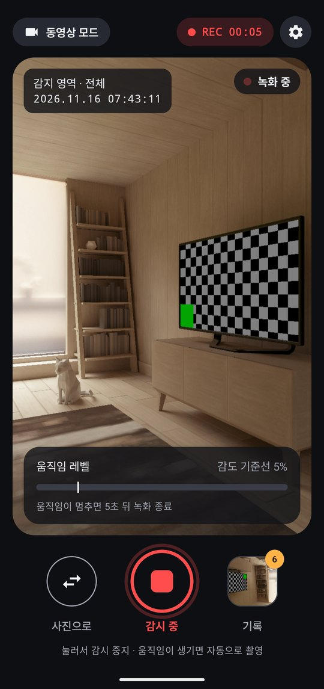
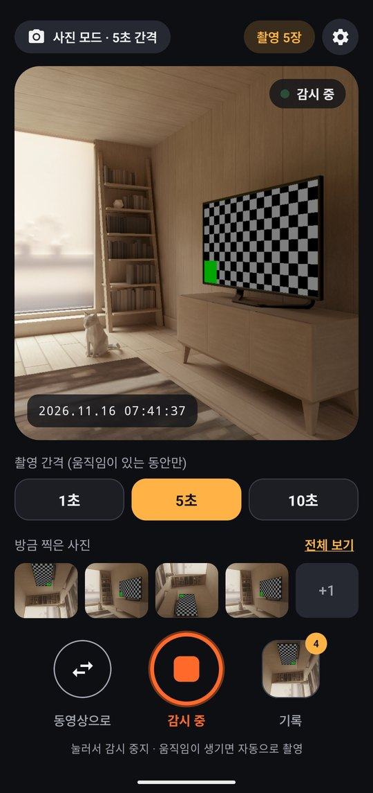
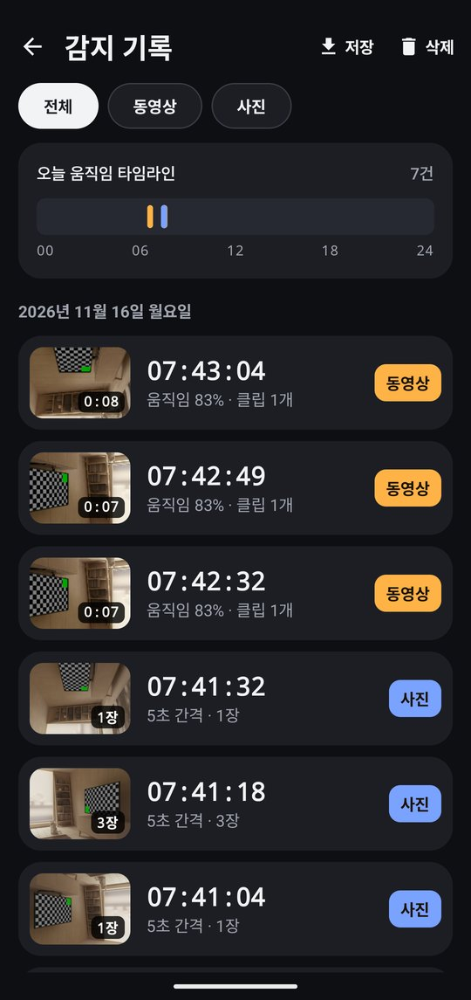
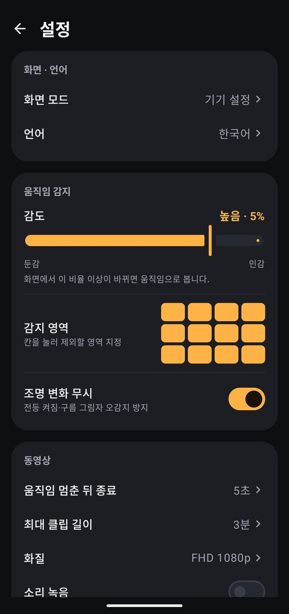

휴대폰 세워 두기
현관, 반려동물 자리, 가게 계산대처럼 지켜보고 싶은 곳에 남는 폰을 세워 두세요. 오래 감시할 땐 충전기를 연결하세요.
현관, 반려동물, 가게 쪽으로 세워 두기만 하세요. 움직임이 생기는 순간 자동으로 녹화하고, 꼭 필요한 장면만 남겨 둡니다.

사용 방법
따로 장비를 살 필요도, 복잡한 설정도 없습니다. 서랍 속 옛날 폰이 바로 감시 카메라가 됩니다.
현관, 반려동물 자리, 가게 계산대처럼 지켜보고 싶은 곳에 남는 폰을 세워 두세요. 오래 감시할 땐 충전기를 연결하세요.
동영상이나 사진 간격 촬영을 고르고 큰 버튼을 누르세요. 길게 누르면 검은 화면으로 감시합니다.
감지된 순간이 타임라인에 쌓입니다. 클립을 재생하고 사진을 넘겨 보고, 남기고 싶은 건 갤러리로 저장하세요.
기능
쓸데없는 움직임은 거르고, 진짜 움직임이 있을 때만 촬영합니다.
움직임이 시작되면 녹화하고, 멈추고 몇 초 뒤에 끝냅니다. 긴 장면은 클립으로 나눠 저장합니다.
사진이 편하다면 움직임이 있는 동안 1초·5초·10초마다 한 장씩 찍습니다.
실시간 움직임 레벨을 보면서, 얼마나 바뀌어야 움직임으로 볼지 정확히 정합니다.
차가 지나가는 창문이나 흔들리는 커튼처럼 신경 쓰이는 부분은 감지에서 빼세요.
전등이 켜지거나 구름 그림자가 지나가도 쓸데없는 기록이 쌓이지 않습니다.
다른 앱을 쓰거나 화면이 꺼져도 계속 감시하고, 감시가 멈추면 알려 줍니다.
오늘 언제 움직임이 있었는지 한눈에 보고, 동영상·사진별로 골라 봅니다.
중요한 장면은 갤러리에 남기세요. 저장 공간 한도에 이르면 오래된 기록부터 알아서 지웁니다.
앱 화면
라이트·다크 모드와 한국어·영어를 지원합니다.
자동으로 녹화하고 움직임 레벨을 실시간으로 보여줍니다.

움직이는 동안 간격마다 찍고, 방금 찍은 사진을 바로 아래에서 봅니다.

오늘의 타임라인과 모든 클립·사진. 바로 저장하거나 지울 수 있습니다.

감도, 감지 영역, 동영상 길이, 저장 공간 한도 등을 내 마음대로.
이럴 때 쓰세요
외출한 사이 현관에 누가 왔는지, 방에 누가 들어왔는지 확인하세요.
우리 고양이·강아지가 하루 종일 뭘 하는지, 몇 시간짜리 영상 없이 확인하세요.
계산대, 창고, 차고를 영업 시간 뒤에도 지켜보는 저렴한 보조 카메라.
택배가 언제 도착했는지, 누가 가져갔는지 정확히 알 수 있습니다.
사생활 보호
움직임 감지 캠은 서버도, 회원가입도 없습니다. 모든 처리와 저장이 지금 손에 든 휴대폰 안에서 이루어집니다.
자주 묻는 질문
네. 앱은 무료이며 광고로 운영됩니다. 갤러리로 저장, 일부 고급 설정처럼 몇 가지 부가 기능은 짧은 광고를 보고 쓸 수 있습니다.
네. 다른 앱을 쓰거나 화면이 꺼져도 감시를 이어 가며, 그동안 알림이 계속 표시됩니다. 오래 안정적으로 쓰려면 배터리 최적화에서 제외하고(앱에서 방법을 안내합니다) 충전기를 연결해 두세요.
휴대폰 안의 앱 전용 폴더에 저장되며, 어디에도 올라가지 않습니다. 남기고 싶은 기록은 감지 기록에서 "갤러리로 저장"을 눌러 갤러리로 옮기세요.
저장 공간 한도(기본 2GB)를 정해 두면 한도에 이를 때 오래된 기록부터 자동으로 지웁니다. 동영상도 짧은 클립으로 나눠 저장합니다.
감도를 낮추고, "조명 변화 무시"를 켜 두고, 감지 영역에서 움직임이 많은 부분을 빼세요. 실시간 움직임 레벨로 얼마나 감지되는지 바로 볼 수 있습니다.
Android 8.0 이상에서 쓸 수 있습니다. 후면·전면 카메라를 모두 쓸 수 있고, 한국어와 영어를 지원합니다.